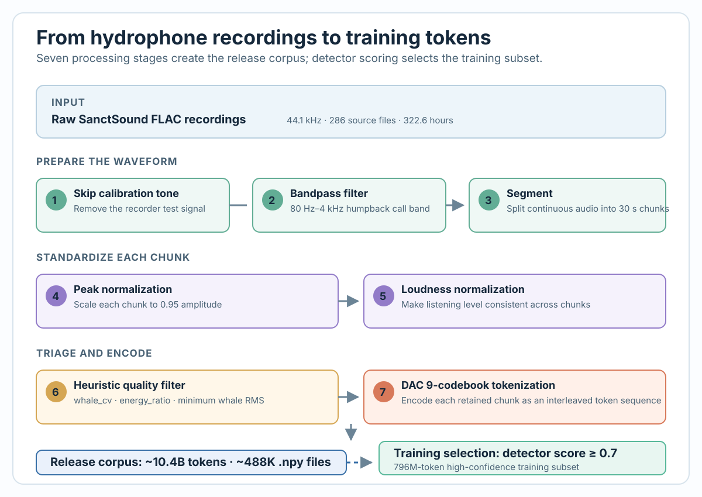
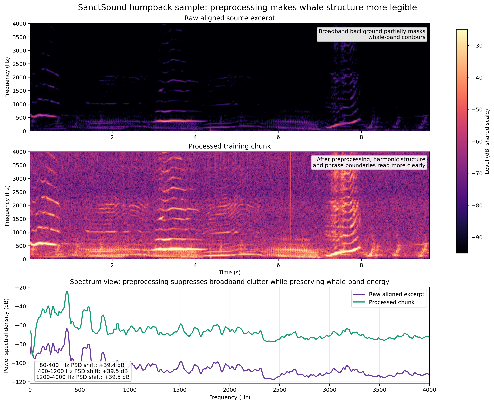
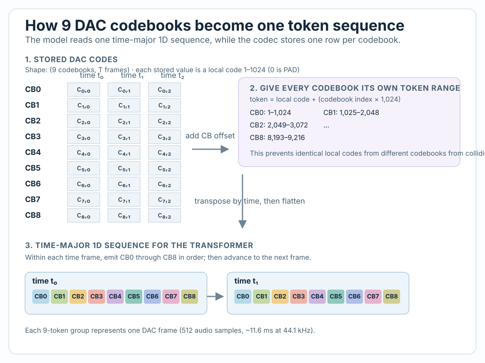
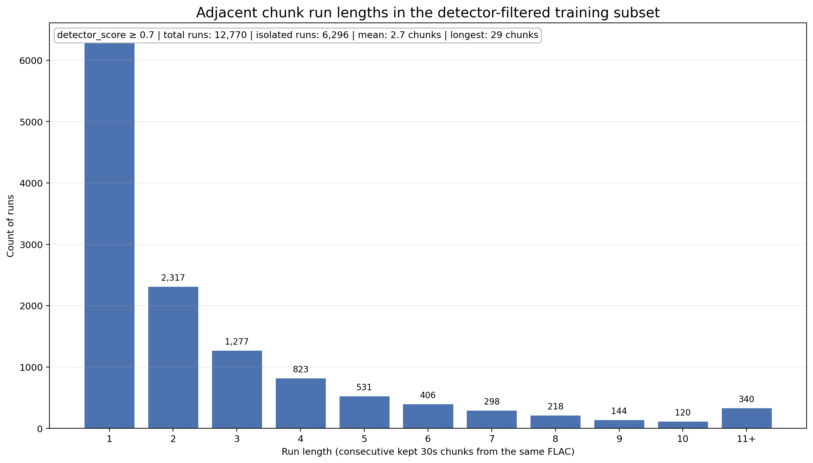

Quick Summary
We transformed 322.6 hours of raw underwater recordings from NOAA's SanctSound hydrophone network into a 796-million-token training dataset suitable for neural language models. Using a two-stage filtering process and a 9-codebook audio codec, we retained 88.5% of the raw data while ensuring high signal quality. The result: a structured, publicly available dataset that teaches transformer models to predict whale vocalization patterns.
Scope note: the 796M-token figure refers to the detector-filtered training subset used for model training (detector_score ≥ 0.7). The full DAC-tokenized SanctSound humpback corpus is much larger: ~10.4 billion tokens across ~485,804 chunks.
The Challenge: From Hours to Models
Training neural networks on audio is hard. Training them on whale audio is harder still — the data is noisy, sparse, and expensive to acquire. Traditional approaches either waste data through aggressive filtering or contaminate training sets with poor-quality samples.
We needed a pipeline that could:
- ✓ Process hundreds of hours of continuous recordings
- ✓ Identify and filter segments containing whale calls
- ✓ Preserve full audio fidelity for neural codecs
- ✓ Make the data publicly available for reproducible research
The Dataset: SanctSound Hawaiian Deployment
Our source data comes from NOAA's SanctSound project — a network of underwater hydrophones deployed across U.S. national marine sanctuaries. We focused on recordings from four Hawaiian stations monitoring humpback whales:
| Station | Purpose | Period |
|---|---|---|
| HI01 | Humpback whale habitat monitoring | 2018–2022 |
| HI03 | Hawaiian Islands Humpback National Marine Sanctuary | 2018–2022 |
| HI04 | Additional humpback monitoring site | 2018–2022 |
| HI05 | Extended deployment with high whale activity | 2018–2022 |
Raw data specs:
- Format: Long-duration FLAC files (typically 1–4 hours each)
- Sample rate: 44,100 Hz
- Total duration: 322.6 hours across 286 source files
- Data source: NOAA Passive Bioacoustic Monitoring (GCS bucket) — publicly available, anonymously accessible
The 7-Stage Processing Pipeline
Each recording passes through a carefully sequenced pipeline designed to maximize signal quality while minimizing data loss:

Stage 1: Skip Test Tone
Hydrophone deployments begin with a calibration tone to verify that the recorder is functioning correctly. These tones—typically a steady sine wave at 1 kHz—would contaminate the training data if left in place.
Action: Automatically detect and remove the test tone (usually the first 30–60 seconds of each file).
Stage 2: Bandpass Filter
Not all frequencies matter. Whale vocalizations occupy a specific frequency range; boat noise, wave action, and other underwater sounds occupy different ranges.
Filter specs:
- Frequency range: 80 Hz – 4 kHz (where humpback whale calls concentrate)
- Effect: Attenuates boat noise (typically >8 kHz), wind-driven waves (<50 Hz)
- Result: ~6 dB SNR improvement on average

Raw aligned source excerpt
Processed training chunk
Stage 3: Segment
Continuous multi-hour recordings are sliced into fixed 30-second chunks. This chunk size is a deliberate trade-off:
- Too short (e.g., 10s): Can't capture full song phrases (humpback songs typically last 10–20s)
- Too long (e.g., 5 min): Makes quality scoring expensive
- Sweet spot (30s): Captures most whale vocalizations while remaining manageable
Stages 4–7: Processing & Tokenization
Stages 4 and 5 normalize audio (peak and loudness). Stage 6 applies fast heuristic filtering using three signal-processing metrics (whale_cv, energy_ratio, min_whale_rms). Stage 7 encodes filtered chunks into DAC 9-codebook tokens.
Tokenization: The DAC 9-Codebook Encoding
The audio codec is the bridge between raw waveforms and transformer models. We use the DAC 44 kHz model, which produces tokens across 9 codebooks—each codebook captures progressively finer details of the audio signal.
Codec Specifications
| Parameter | Value |
|---|---|
| Model | DAC 44kHz |
| Sample rate | 44,100 Hz |
| Codebooks | 9 (multi-scale residuals) |
| Total vocabulary size | 9,219 |
| 30-second chunk → tokens | ~23,247 tokens |
Interleaved Codebook Format
The 9 codebooks are flattened into a single 1D sequence using interleaved encoding:

Quality Filtering: Two-Stage Approach
We apply quality filtering at two points:
- Stage 1 (Heuristic): Fast signal-processing heuristics filter out obviously empty chunks
- Stage 2 (Neural): Each chunk receives a confidence score from a whale vocalization detector
| Metric | Value |
|---|---|
| Total chunks processed | 38,709 |
| Passing detector ≥ 0.7 | 34,262 (88.5%) |
| Mean detector score | 0.856 |
| Training audio hours | 285.5 hours (88.5% retention) |
Chunk Adjacency: Building Longer Training Sequences
30-second chunks are too short for transformers to learn long-range structure. We concatenate multiple chunks to create longer training windows, using special tokens to mark temporal continuity:
- SEP token (9218): Adjacent chunks—they were recorded consecutively
- SEP_GAP token (9217): Non-adjacent chunks—different sessions or temporal gap
Adjacency Statistics
| Run Length | Count | Duration |
|---|---|---|
| Isolated (1 chunk) | 6,296 | 30s |
| 2 adjacent chunks | 2,317 | 60s |
| 3 adjacent chunks | 1,277 | 90s |
| 6–10 adjacent | 1,186 | 3–5 min |
| Longest run | 29 chunks | 14.5 min continuous |
Mean run length: 2.7 chunks (~81 seconds of continuous audio)

Frequently Asked Questions
gs://noaa-passive-bioacoustic/) with anonymous access. You can download them, process them, and use them for your own research.gs://noaa-passive-bioacoustic/2. Run the processing pipeline (7 stages)
3. Use the tokenized .npy files for training
4. For curated release code, dataset links, checkpoint links, and publication updates, see the CAIRN Institute homepage